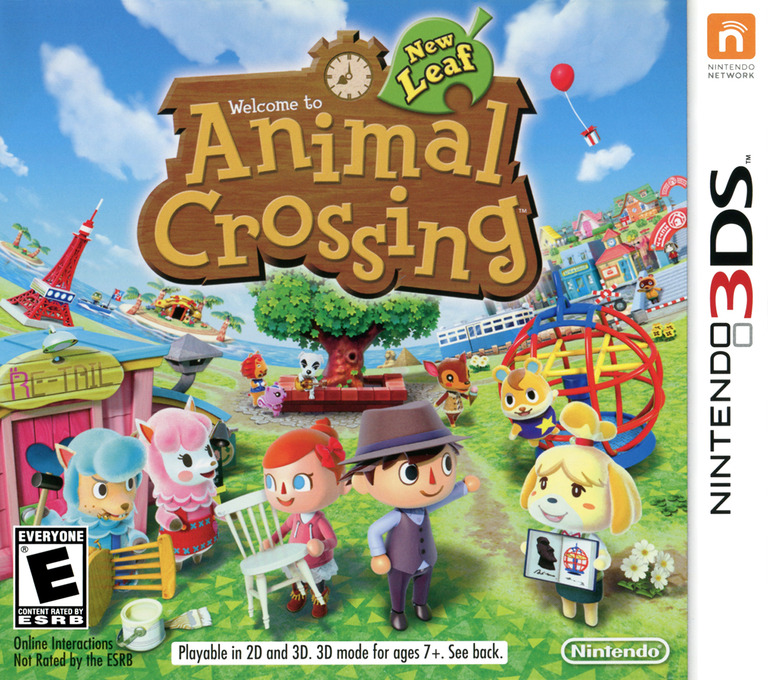
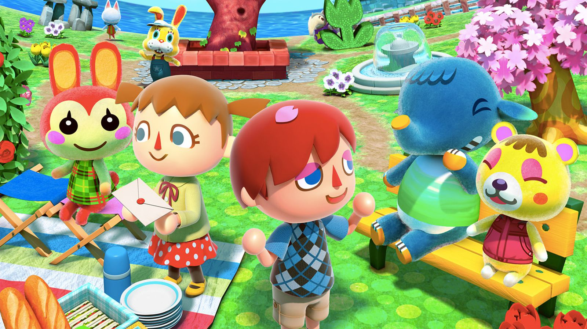

Este género se caracteriza por recrear situaciones o actividades del mundo real, dejando al jugador tomar el control de lo que ocurre.Los videojuegos de simulación reproducen sensaciones que en realidad no están sucediendo. Pretenden reproducir tanto las sensaciones físicas (velocidad, aceleración, percepción del entorno) y una de sus funciones es dar una experiencia real de algo que no está sucediendo para de esta forma no poner en riesgo la vida de alguien.
Los primeros simuladores que ha conocido el hombre surgieron en los años 1960. Su principal misión era preparar mejor a los pilotos de aviación. Hoy en día se puede decir que son indispensables. Se les considera pequeños juegos ya que no son reales. La función de los simuladores es aproximarse lo más posible a la realidad. El bajo coste de esta herramienta de aprendizaje ha simplificado su expansión.
Existen varios subgéneros de simulación: Simulación de vehículos: Son videojuegos que permiten al jugador operar una variedad de vehículos de forma más o menos realista. Los que gozan de mayor popularidad son los simuladores de conducción (generalmente de carreras de coches, considerados en sí mismos como uno de los grandes géneros de videojuegos), los videojuegos de combate en vehículos, y los simuladores de vuelo. Simulación de construcción: Los juegos de construcción (o de construcción y gestión) son un género muy popular en PC, donde el programa le proporciona al usuario todas las herramientas para construir un proyecto, en el cual se consideran desde gastos de construcción y mantenimiento, hasta una línea de tiempo, física y clima que afecta todas las decisiones que tome. La particularidad de poder experimentar, tomar decisiones y afectar el desempeño de la simulación, los hace tremendamente adictivos". Simulación de vida: Son videojuegos en los que el jugador controla una o más formas de vida artificial , ya sea de seres humanos o de animales. Simulación de combate: Género que recrea situaciones de guerra más allá de lo que lo puedan hacer los populares videojuegos de disparos. Se caracteriza por el elevado realismo en todos los aspectos relevantes, ya sea en el manejo de un soldado, una cuadrilla militar. Otros subgéneros dentro de los videojuegos de simulación son: Simuladores médicos (Trauma Center: Under the Knife, Surgeon Simulator 2013); simuladores de citas (Tokimeki Memorial); simuladores de caza (Deer Hunter); y simuladores de trabajo (Street Cleaning Simulator, Crane Simulator).